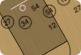
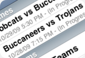
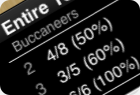
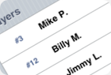
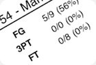

Statsquatch Basketball Scorekeeper
Statsquatch Basketball Scorekeeper is an easy and effective way to score live basketball games on your iPhone or iPod Touch. Designed by a former team statistician, Statsquatch Basketball Scorekeeper streamlines standard pencil and paper statistics gathering and scorebook entry into an intuitive touch-based interface focused on simplicity and efficiency. Statsquatch Basketball Scorekeeper produces stunning PDF reports that deliver fresh insights into your favorite team or player's performance.
Features

Intuitive, touch-based game tracking

Track multiple teams across seasons

Real-time, in-game stats

Track a single player or an entire team

Scout opponents' weaknesses